Referenzen
Ein Auszug aus unseren Projekten in Berlin und Brandenburg.
Das sagen unsere Kunden
Echte Bewertungen unserer Kunden von MyHammer, ungekürzt übernommen. Mit „…“ endende Texte sind auf MyHammer gekürzt dargestellt.
„Alles bestens, danke.“
„Entspricht einfach alle Erwartungen und hebt sich von der Masse komplett ab, hält sich an absprachen und gibt Ideen und Tipps, die er auch umsetzen kann. Für jede Angelegenheit würde ich seine Leistung jederzeit in Anspruch nehmen.“
„Zuverlässige Arbeit. Alle Absprachen eingehalten, klare Kommunikation, verlässlich in Terminen. Jederzeit gerne wieder!“
„Alle Arbeiten wurden sauber und zu meiner vollsten Zufriedenheit ausgeführt, der zweite Teil ließ zeitlich etwas auf sich warten, ansonsten alles bestens“
„Von der Auftragsübernahme bis zum Abschluss des Projektes immer zuverlässig, lösungsorientiert, freundlich… toller Mann!“
„Sehr kompetent und zuverlässige Durchführung der Arbeit!“
„Herr Beiersdorf hat super Arbeit geleistet. Pünktlichkeit, sauberes Arbeiten sowie Freundlichkeit…. haben wir Täglich erfahren. Ich würde Ihn immer wieder Buchen.“
„Die Firma Voltlogik hat in meinem Haus normkonform eine Notstromeinspeisung installiert. Die Installationsarbeiten wurden zu den vereinbarten Terminen perfekt und sauber dokumentiert durchgeführt. Der Mitarbeiter war sehr umsichtig und …“
„Ich bin sehr zufrieden. Daniel hat meine Erwartungen vollständig erfüllt und wird von mir sehr gerne meinem Freundeskreis empfohlen.“
„VLT Voltlogik UG , vertreten durch Herrn Beiersdorf hat bei mir zuhause die Montage einer Wallbox durchgeführt. Die Kommunikation mit ihm und die durchgeführte Montage Wurde zu meiner vollsten Zufriedenheit durchgeführt. …“
Projekte
Ein Auszug aus unseren Arbeiten in Berlin und Brandenburg.
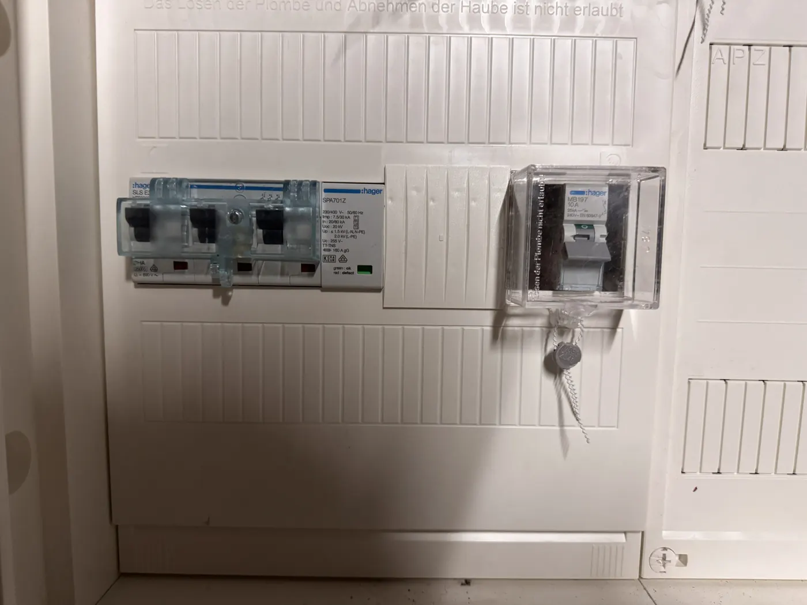
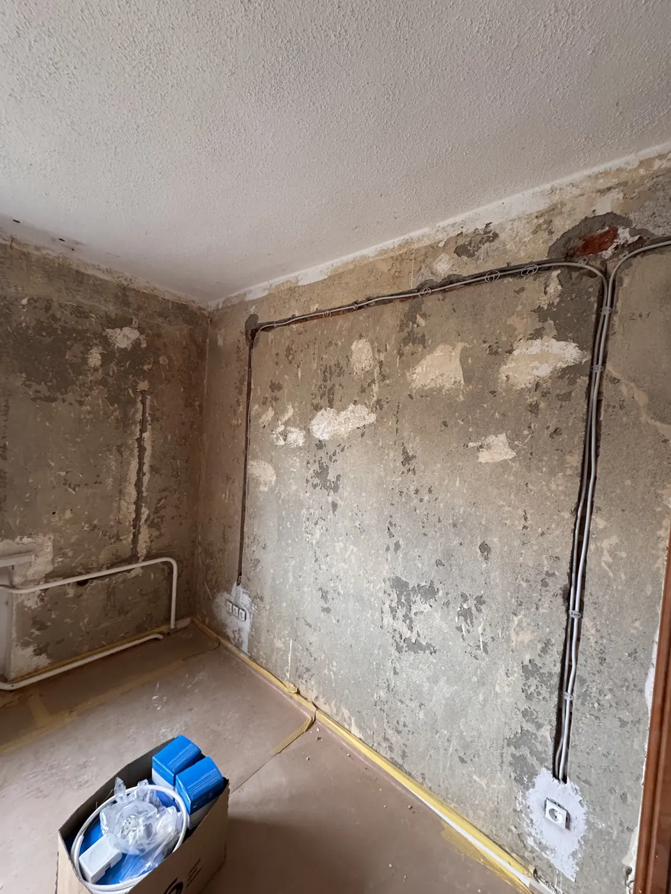
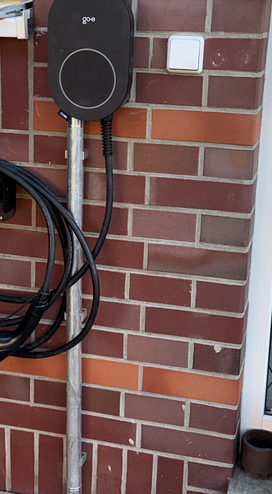
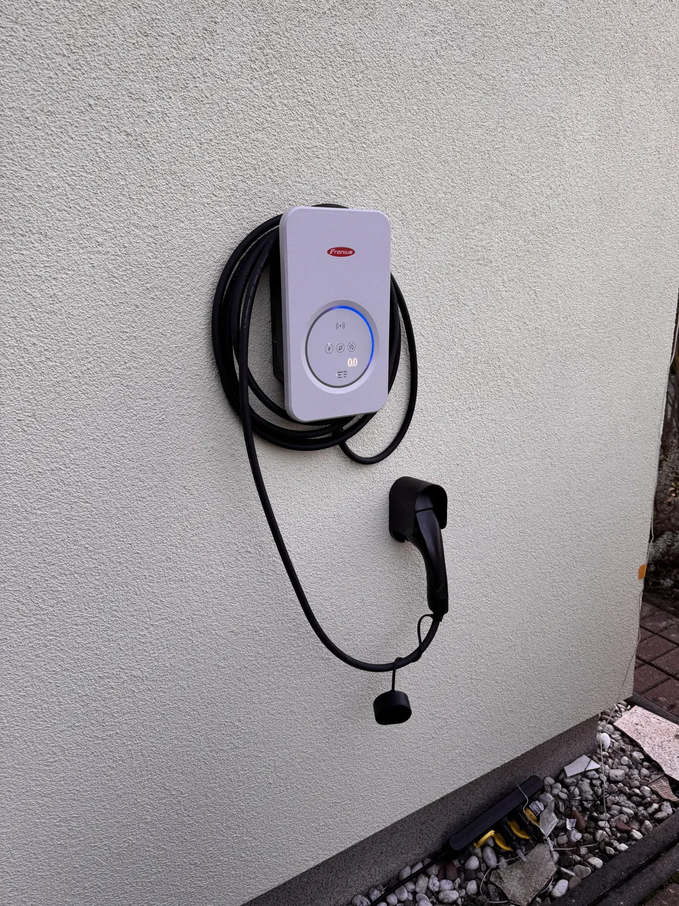
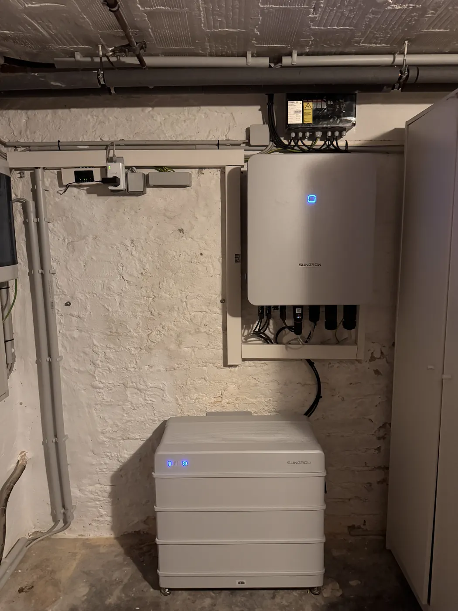
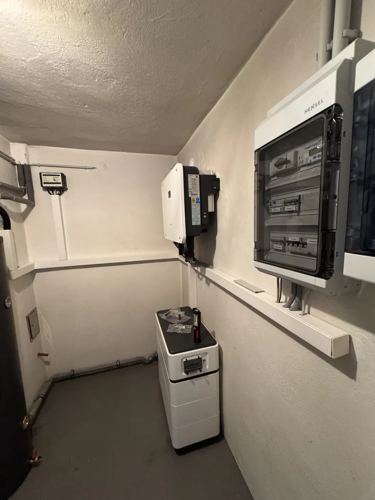
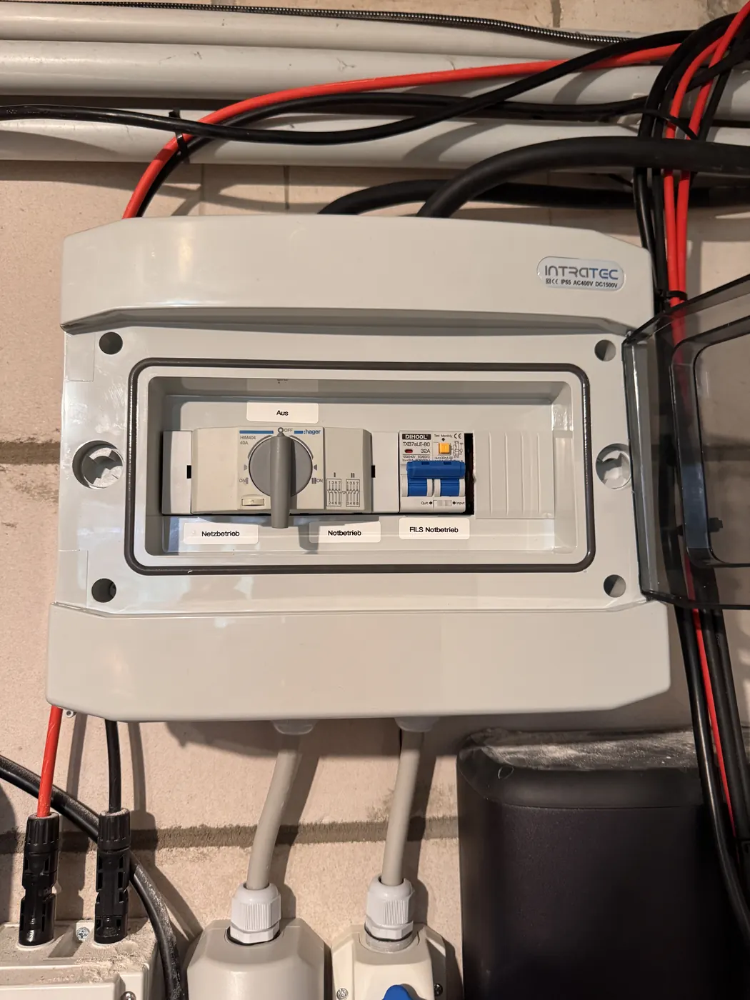
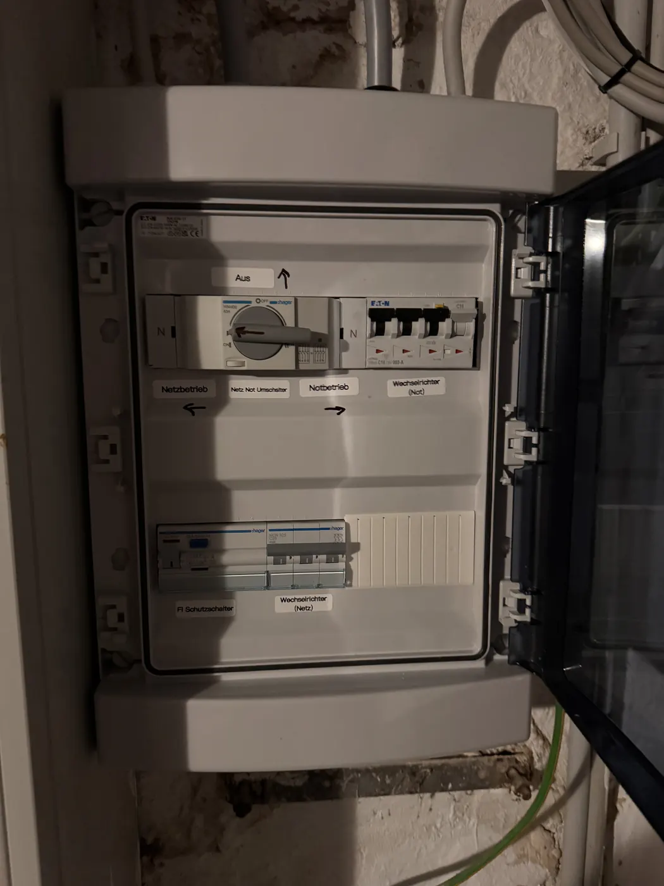
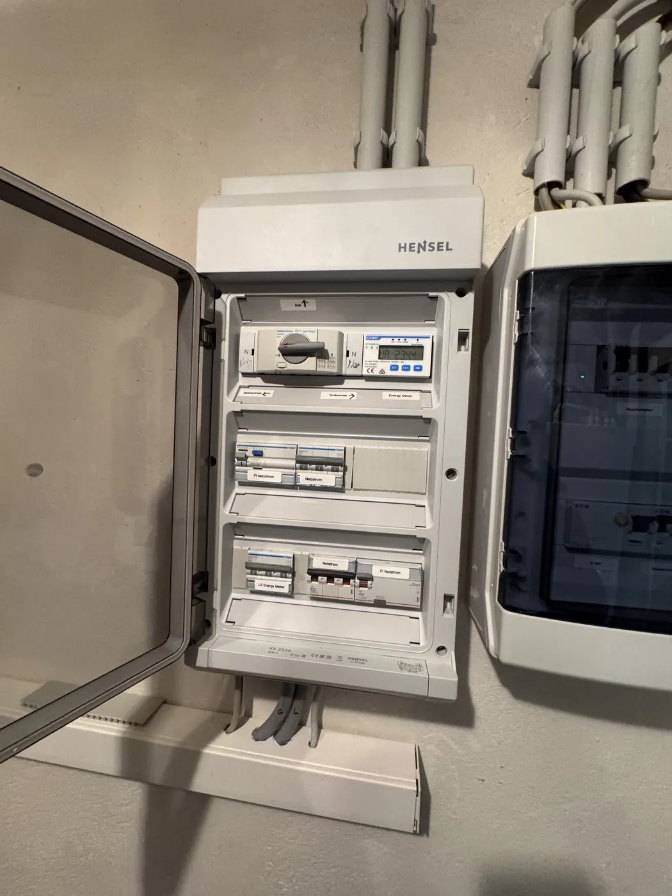
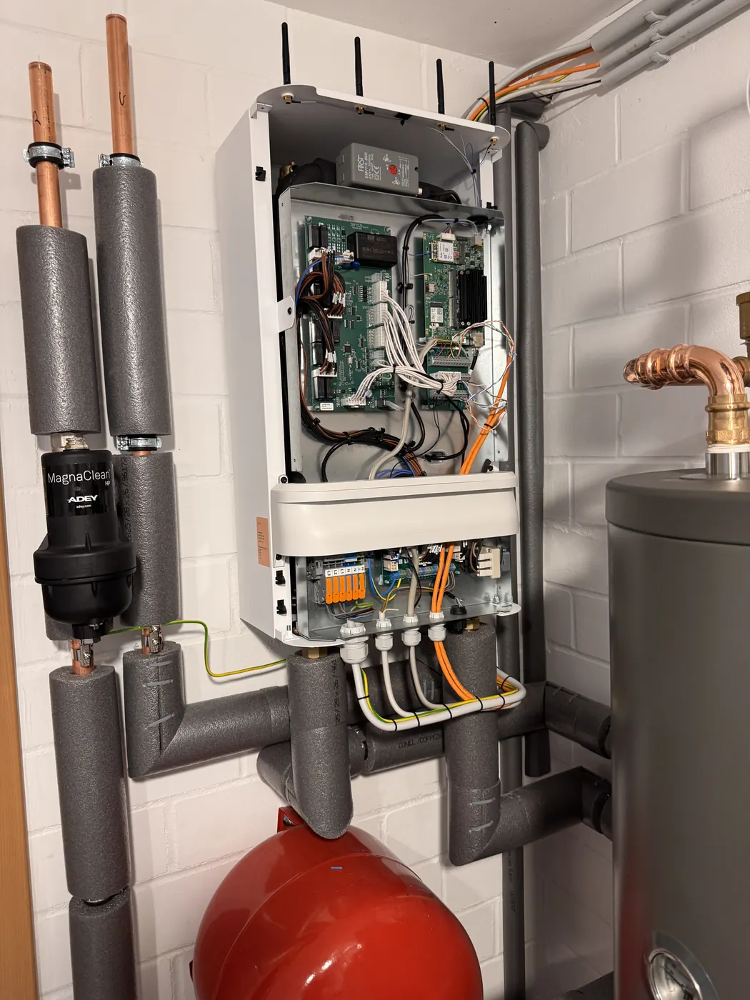
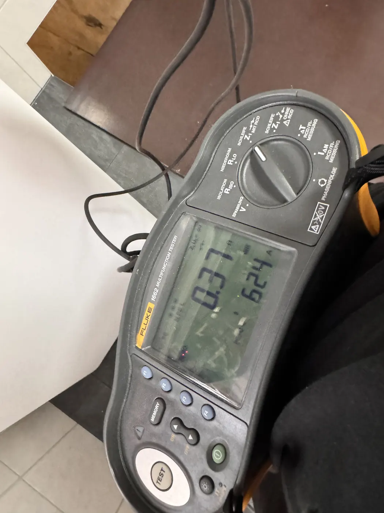
Bereit für Ihr Projekt?
Schildern Sie uns kurz Ihr Vorhaben. Wir melden uns zeitnah.